Your preferences come first.
Your interests, pace and everyday comforts guide every recommendation your concierge makes.
“It’s the small things that make a journey special.”
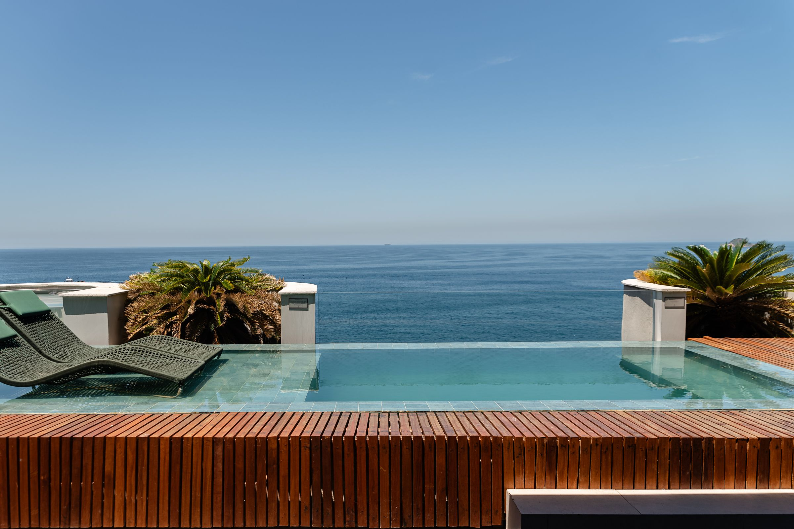
We begin by listening, then shape your travel around what matters most to you.
Your pace, your preferences and your peace of mind guide every detail we coordinate.
Your interests, pace and everyday comforts guide every recommendation your concierge makes.
“It’s the small things that make a journey special.”
We coordinate stays, transfers and experiences, giving you more time to enjoy your journey.
“Less to arrange. More to remember.”
A personal point of contact keeps your preferences and arrangements in one conversation.
“True care is found in the details.”
Whatever draws you away, your concierge shapes the experience around what matters to you.
Thoughtful journeys bring together distinctive places, personal interests and carefully connected details.
Speak to Your Concierge ↗ Personal and Bespoke
Personal and BespokeReconnect with family places, familiar flavours and the stories that shaped you.
Speak to Your Concierge ↗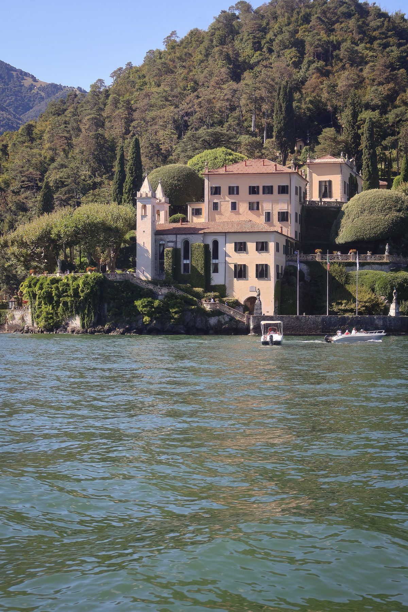
Personal and BespokeLet us choose the setting around your interests, comfort and agreed preferences.
Speak to Your Concierge ↗Unhurried days and thoughtful touches make room for time together, your way.
Speak to Your Concierge ↗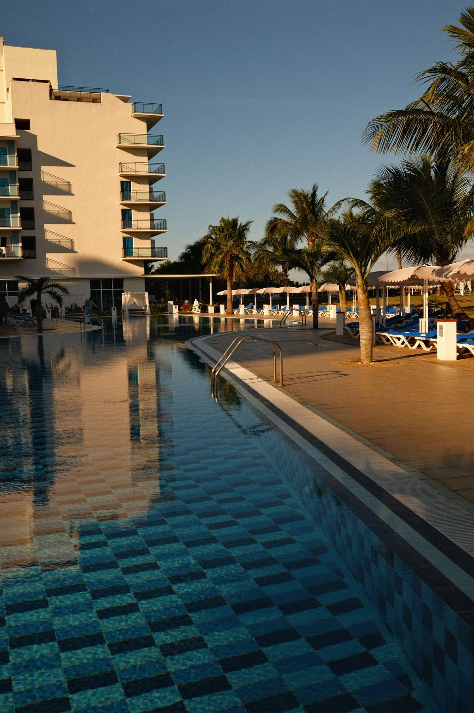
Together and CelebrationsBring generations together with comfortable stays and experiences everyone can look forward to.
Speak to Your Concierge ↗ Together and Celebrations
Together and CelebrationsMark a meaningful occasion with people, places and details chosen around you.
Speak to Your Concierge ↗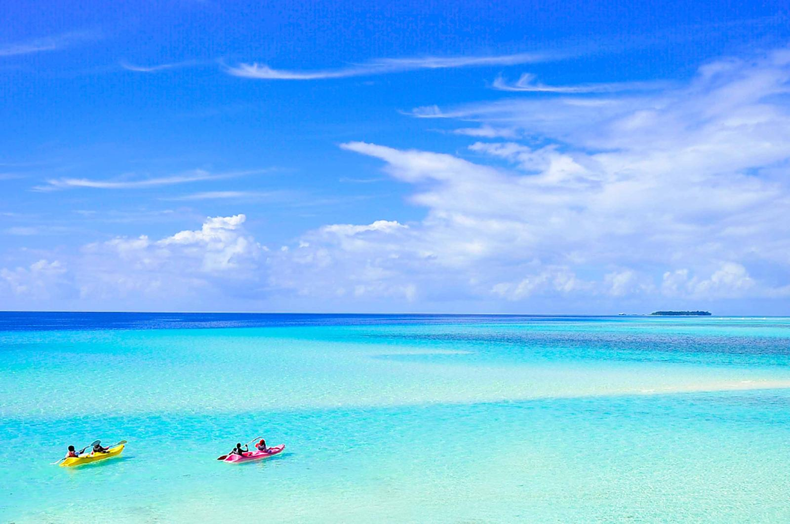
Nature and RenewalFind your rhythm between quiet shores, open water and long, unhurried afternoons.
Speak to Your Concierge ↗ Nature and Renewal
Nature and RenewalTrade the everyday for crisp air, mountain views and welcoming places to pause.
Speak to Your Concierge ↗Explore wild landscapes with considered guiding, seasonal planning and respect for wildlife.
Speak to Your Concierge ↗Create breathing space with restorative surroundings and days shaped around your pace.
Speak to Your Concierge ↗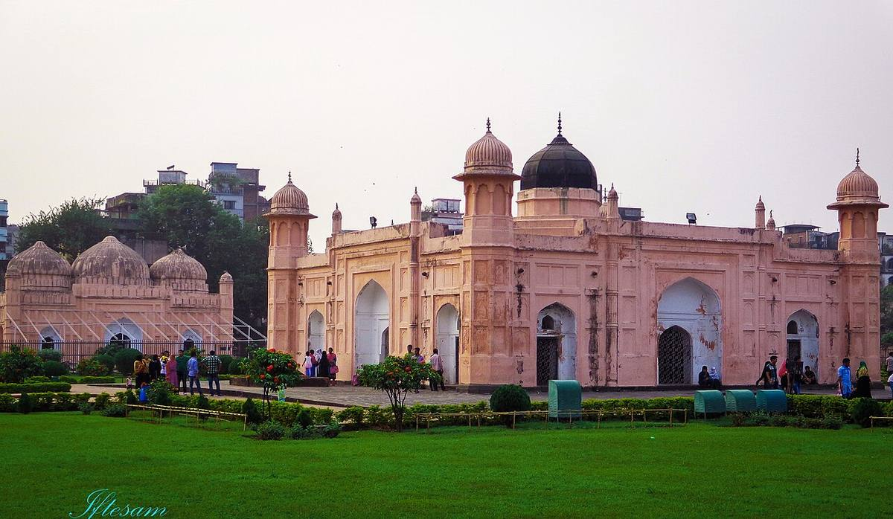
Culture and DiscoveryLocally informed river, heritage and coastal journeys reveal a more personal Bangladesh.
Speak to Your Concierge ↗ Culture and Discovery
Culture and DiscoveryFollow the architecture, traditions and stories that give each place its character.
Speak to Your Concierge ↗Explore a place through its kitchens, local flavours and memorable shared tables.
Speak to Your Concierge ↗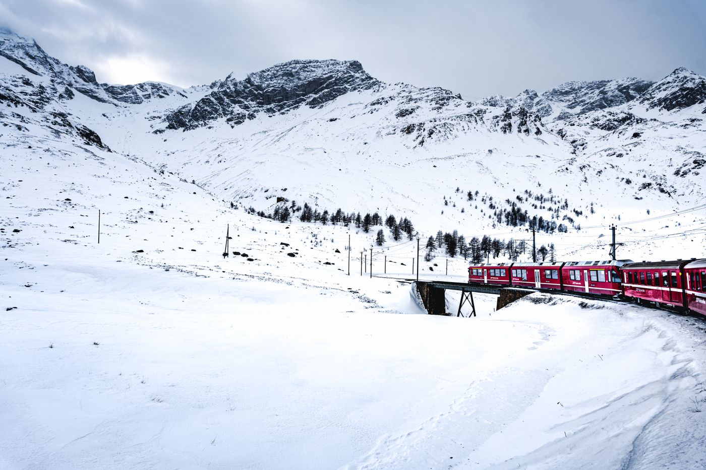
Culture and DiscoverySlow the journey down as changing landscapes unfold beyond your carriage window.
Speak to Your Concierge ↗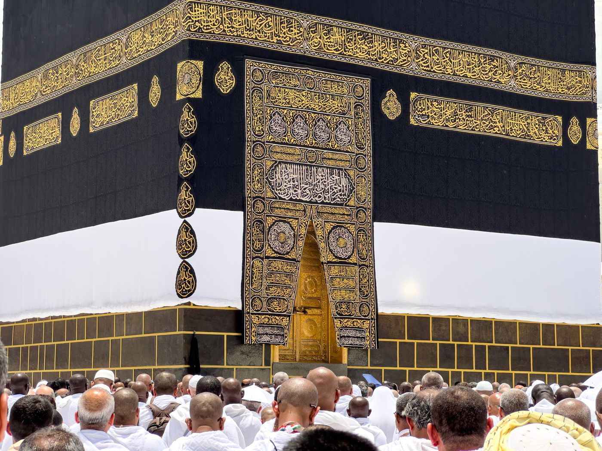
Purpose and OccasionsDiscuss pilgrimage arrangements with care for your family, pace and practical needs.
Speak to Your Concierge ↗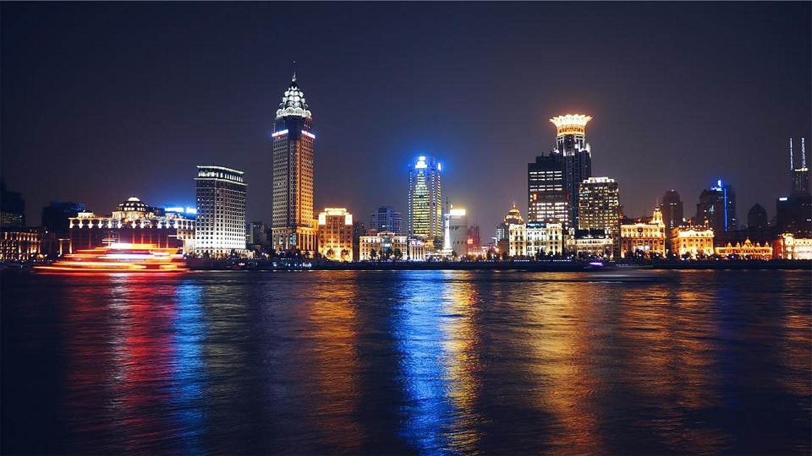
Purpose and OccasionsConnect meetings, comfortable stays and thoughtful transfers around the demands of your schedule.
Speak to Your Concierge ↗ Purpose and Occasions
Purpose and OccasionsBuild a journey around the occasion, with considered arrangements before and afterwards.
Speak to Your Concierge ↗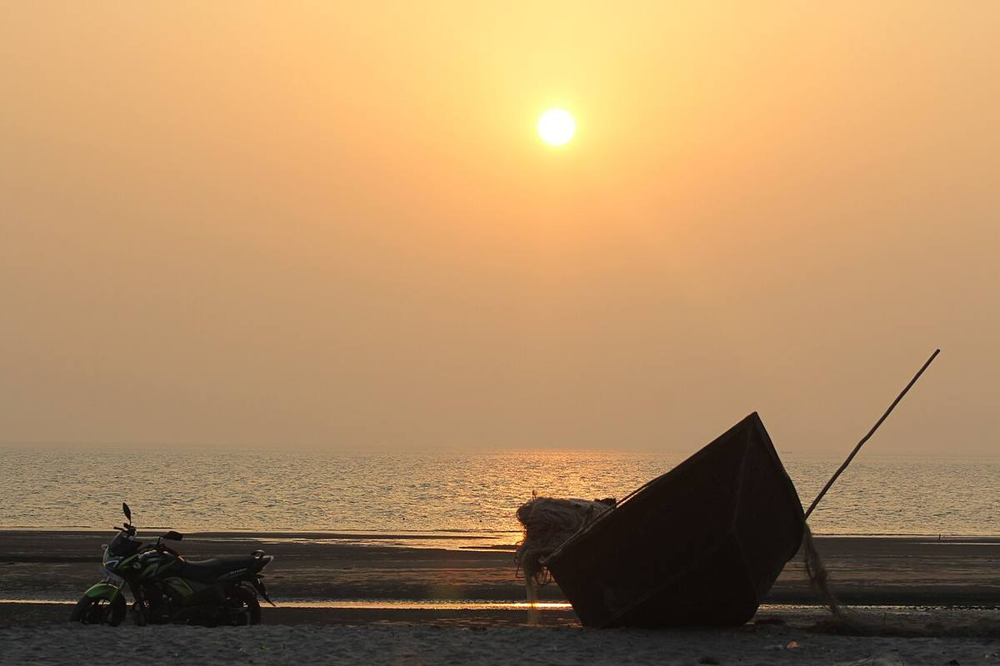
Purpose and OccasionsMake a few days feel spacious with well-chosen places and considered timing.
Speak to Your Concierge ↗ Exceptional Ways to Travel
Exceptional Ways to TravelDiscuss private flights shaped around your route, schedule and preferred onboard arrangements.
Speak to Your Concierge ↗ Exceptional Ways to Travel
Exceptional Ways to TravelExplore time at sea with routes and onboard preferences thoughtfully brought together.
Speak to Your Concierge ↗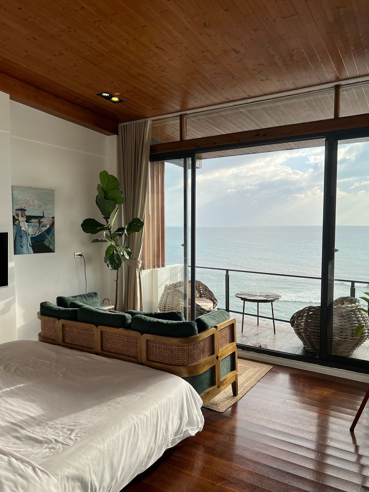
Exceptional Ways to TravelFind a stay that feels right, from setting and character to everyday comfort.
Speak to Your Concierge ↗Whether returning to your roots or discovering Bangladesh, we make each journey personal.
Your preferences guide us towards places where you can feel completely at ease.

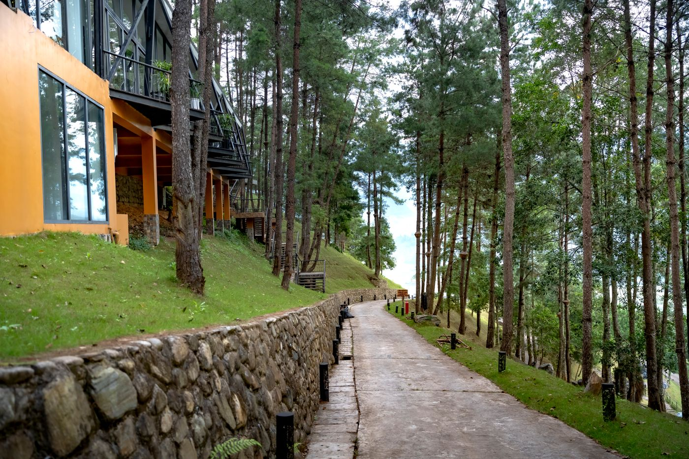
Photography illustrates stay styles, rather than confirmed properties or partnerships.
We begin with a conversation, then thoughtfully coordinate the details around your life.
Share what matters to you, from your preferred pace to the moments you treasure.
Your concierge brings together a considered journey and discusses the arrangements with you.
We proceed with your approval, keeping your preferences at the heart of each arrangement.
You don’t need every detail decided; tell us what’s on your mind.
Based in Dhaka. Thoughtfully connected to your world.